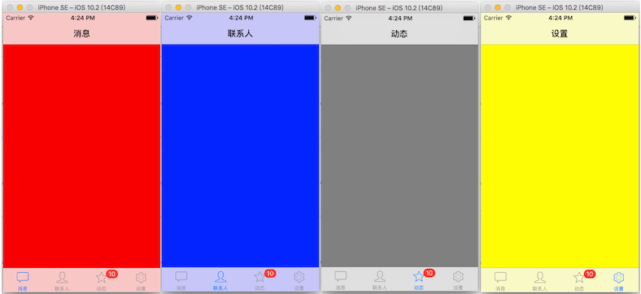
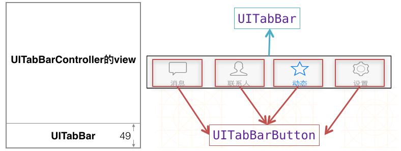
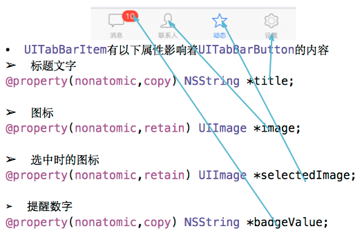
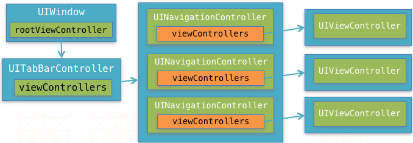
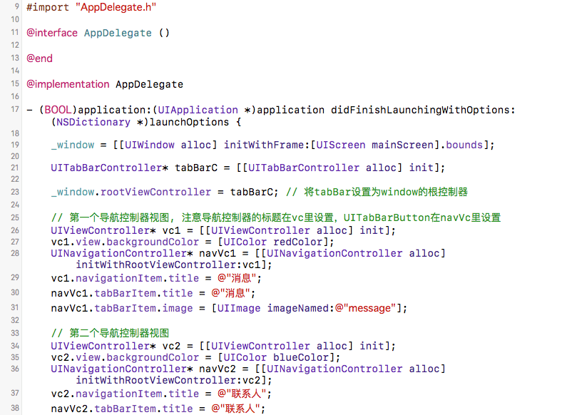
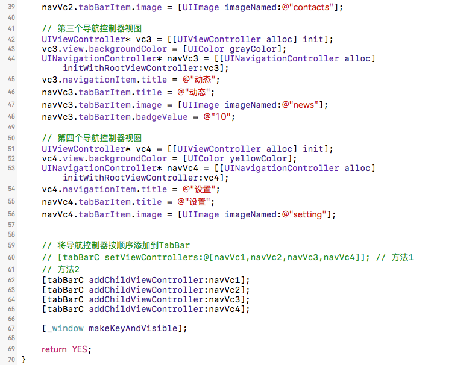

2016/11/10
Author: guoqzuo
iOS UITabBarController
现在手机里常用的app绝大部分都用到了UITabBarController，也就是最下面的一排按钮，通过点击按钮可以切换页面。它可以轻松管理多个控制器，类似于UINavigationController，一个是在屏幕顶部，一个是在屏幕底部。这里通过一个小例子，来了解UITabBarController。

UITabBarController结构
UITabBarController的视图底部有一个类似于导航条(高64)的UITabBar(高49)，在不添加子控制器视图的情况下，底部就是一个白色的背景条。我们可以给UITabBarController添加对应的子视图控制器，他们会按顺序依次对应相应的UITabBarButton，通过子视图控制器的的UITabBarItem属性，可设置按钮的标题，图片等。

UITabBarItem属性相关

主流的app框架及应用
关于UITabBarController，可参见: iOS开发UI篇-UITabBarController简单介绍，基本了解UITabBarController之后，我们可以与之前的导航控制器相结合。一般主流app的结构如下。在导航控制器的前面再加一层TabBarController。

不依赖storyboard去掉main的入口，在代理里创建页面。这里的UIViewControlle我们可以根据需要创建对应的控制器如AddViewController，ContactsViewController等，相统一管理导航控制器也可以自定义UINavigationController。


代码
#import "AppDelegate.h"
@interface AppDelegate ()
@end
@implementation AppDelegate
- (BOOL)application:(UIApplication *)application didFinishLaunchingWithOptions:(NSDictionary *)launchOptions {
_window = [[UIWindow alloc] initWithFrame:[UIScreen mainScreen].bounds];
UITabBarController* tabBarC = [[UITabBarController alloc] init];
_window.rootViewController = tabBarC; // 将tabBar设置为window的根控制器
// 第一个导航控制器视图, 注意导航控制器的标题在vc里设置，UITabBarButton在navVc里设置
UIViewController* vc1 = [[UIViewController alloc] init];
vc1.view.backgroundColor = [UIColor redColor];
UINavigationController* navVc1 = [[UINavigationController alloc] initWithRootViewController:vc1];
vc1.navigationItem.title = @"消息";
navVc1.tabBarItem.title = @"消息";
navVc1.tabBarItem.image = [UIImage imageNamed:@"message"];
// 第二个导航控制器视图
UIViewController* vc2 = [[UIViewController alloc] init];
vc2.view.backgroundColor = [UIColor blueColor];
UINavigationController* navVc2 = [[UINavigationController alloc] initWithRootViewController:vc2];
vc2.navigationItem.title = @"联系人";
navVc2.tabBarItem.title = @"联系人";
navVc2.tabBarItem.image = [UIImage imageNamed:@"contacts"];
// 第三个导航控制器视图
UIViewController* vc3 = [[UIViewController alloc] init];
vc3.view.backgroundColor = [UIColor grayColor];
UINavigationController* navVc3 = [[UINavigationController alloc] initWithRootViewController:vc3];
vc3.navigationItem.title = @"动态";
navVc3.tabBarItem.title = @"动态";
navVc3.tabBarItem.image = [UIImage imageNamed:@"news"];
navVc3.tabBarItem.badgeValue = @"10";
// 第四个导航控制器视图
UIViewController* vc4 = [[UIViewController alloc] init];
vc4.view.backgroundColor = [UIColor yellowColor];
UINavigationController* navVc4 = [[UINavigationController alloc] initWithRootViewController:vc4];
vc4.navigationItem.title = @"设置";
navVc4.tabBarItem.title = @"设置";
navVc4.tabBarItem.image = [UIImage imageNamed:@"setting"];
// 将导航控制器按顺序添加到TabBar
// [tabBarC setViewControllers:@[navVc1,navVc2,navVc3,navVc4]]; // 方法1
// 方法2
[tabBarC addChildViewController:navVc1];
[tabBarC addChildViewController:navVc2];
[tabBarC addChildViewController:navVc3];
[tabBarC addChildViewController:navVc4];
[_window makeKeyAndVisible];
return YES;
}